Imperium
Imperium Utica
← all settlements · all regions · wiki index
The settlement of the region of Xatiq, held at the campaign start by Carthage (Phoenician).
Size: City · Population: 4,500 · Buildings: 14
What is already built
| Building chain | Level | Building chain | Level | Building chain | Level | |||
|---|---|---|---|---|---|---|---|---|
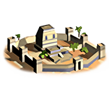 | core building | Governor's Palace | 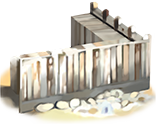 | defenses | Small Stone Wall | governmentA | Dependency | |
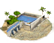 | health | Sewers (Sanitation) | hinterland region | Region Information Scroll | 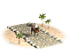 | hinterland roads | Paved Roads | |
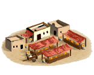 | market | Local Market | 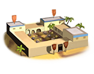 | military industrial complex | Basic Armoury | 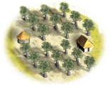 | olive cultivation | Olive Press (Rural) |
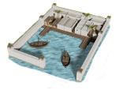 | port buildings | Shipwright | 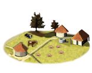 | sedentary animal husbandry | Breeding Farms (Husbandry) | 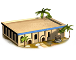 | autonomous mint | Local Mint (Civic) |
| salt production | Salt Refiner (Industry) | 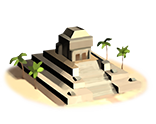 | temples standard | Temple |
What can be recruited here
| Unit | Raised at | Cost | Upkeep | Unit | Raised at | Cost | Upkeep | Unit | Raised at | Cost | Upkeep | |||
|---|---|---|---|---|---|---|---|---|---|---|---|---|---|---|
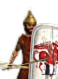 | Libyan Light Infantry | Region Information Scroll | 1,617 | 592 | Libyan Skirmishers | Region Information Scroll | 1,119 | 410 | Libyan Slingers | Region Information Scroll | 1,078 | 395 |
The land around it
Terrain, climate, fertility, water, port, the trade goods placed inside the borders, and the recruitment zones and homeland this ground counts as, are all on Xatiq — stated there once, so the two pages cannot disagree.